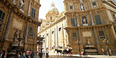

I Quattro Canti, o piazza Vigliena,è il nome di una piazza ottagonale all'incrocio dei due principali assi viari di Palermo:la via Maqueda e il Cassaro, oggi Corso Vittorio Emanuele, a metà circa della loro lunghezza.
Un antico detto recitava "feste e forche a Piazza Vigliena" (pubbliche feste ed esecuzioni capitali).
Galleria foto
